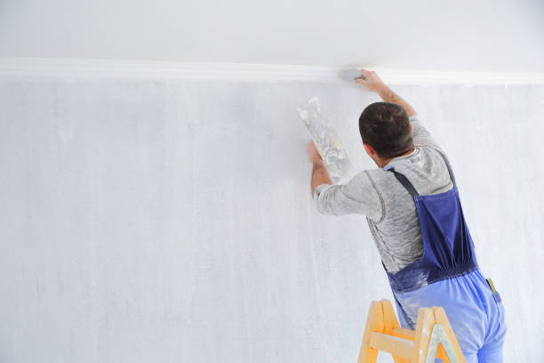

Waukomis Oklahoma
info@hudsonconcretecontractors.xyz
Waukomis Oklahoma
info@hudsonconcretecontractors.xyz

Leading concrete specialists in Waukomis Oklahoma . From foundations to decorative finishes, our skilled team ensures superior quality and long-lasting results. Trust us for all your concrete projects.
Click Here To Call Us (877) 848-1711Looking for a reliable concrete company in Waukomis Oklahoma ? Our expert team specializes in delivering top-notch concrete solutions for residential, commercial, and industrial projects. Whether you're planning a new driveway, patio, or commercial foundation, we have the skills and experience to ensure your project is completed with the highest standards of quality and durability.
Why Choose Us for Your Concrete Needs in Waukomis Oklahoma ?
At Concrete, we pride ourselves on being the go-to concrete contractor in Waukomis Oklahoma . Our reputation is built on:
Experienced Professionals: Our team has years of experience in the concrete industry, ensuring precise and efficient workmanship.
High-Quality Materials: We use only the best materials, ensuring that your concrete structures are built to last.
Customized Solutions: Every project is unique, and we tailor our services to meet your specific needs and budget.
Timely Completion: We understand the importance of deadlines, and we strive to complete every project on time, without compromising on quality.
Our Concrete Services in Waukomis Oklahoma
We offer a wide range of concrete services, including:
Concrete Driveways: Durable and aesthetically pleasing driveways that stand the test of time.
Stamped Concrete: Add a decorative touch to your property with our custom stamped concrete designs.
Concrete Foundations: Strong and stable foundations for both residential and commercial properties.
Patios and Walkways: Beautiful outdoor spaces designed for comfort and style.
Concrete Repairs: Quick and reliable repairs to restore the integrity of your concrete surfaces.
Contact Us Today for a Free Estimate!
If you're in Waukomis Oklahoma and need professional concrete services, look no further. Contact us today to discuss your project and get a free, no-obligation estimate. Trust Concrete to bring your concrete vision to life!
Residential & commercial Concrete
Quality services at affordable prices
Immediate 24/ 7 emergency services


Cracks in concrete surfaces can be more than just an eyesore; they can also indicate underlying issues that need attention. At Hudson Concrete Contractors, serving Waukomis Oklahoma we understand the common causes of concrete cracking and how to address them effectively.
Temperature Fluctuations
One of the most common reasons for concrete cracks is temperature changes. Concrete expands in the heat and contracts in the cold. Without proper expansion joints, these fluctuations can cause the surface to crack. Ensuring that your concrete is poured and cured under the right conditions helps mitigate this issue.
Poor Concrete Mix and Installation
The quality of the concrete mix and the installation process significantly impact the likelihood of cracking. An improper mix ratio, inadequate curing, or poor workmanship can weaken the concrete and lead to cracks. At Hudson Concrete Contractors, we use high-quality materials and adhere to industry best practices to ensure a durable finish.
Structural Overload
Concrete surfaces are designed to support specific loads. Overloading, whether from heavy vehicles or equipment, can put undue stress on the concrete and cause it to crack. Ensuring that your concrete is designed to handle the expected load is crucial for its longevity.
Settlement and Soil Movement
Uneven settling of the soil beneath the concrete can lead to cracking. Soil movement due to erosion, poor drainage, or other factors can cause the concrete slab to shift and crack. Proper site preparation and soil stabilization can prevent this issue.
Shrinkage Cracking
As concrete dries, it naturally shrinks. If the curing process is not managed correctly, this shrinkage can lead to surface cracks. Controlled curing methods and the use of joint fillers can help minimize shrinkage cracking.
For expert concrete solutions in Waukomis Oklahoma trust Hudson Concrete Contractors to provide high-quality installations and repairs. Contact us today to learn more about preventing and addressing concrete cracks in your property!
Residential & commercial Concrete
Quality services at affordable prices
Immediate 24/ 7 emergency services
If you’re looking for cement contractors near you in Waukomis Oklahoma we are your ideal choice. Our team consists of trained professionals who specialize in all aspects of cement work, from mixing to application. We understand the specifics involved in working with cement and are committed to ensuring that your projects are completed to the highest standards. By choosing our services, you gain access to expertise, competitive pricing, and a dedication to quality that is unmatched in the area.

Just because you’re on a budget doesn’t mean you have to sacrifice quality. Our affordable concrete services provide you with cost-effective solutions that don’t compromise on durability or aesthetics. We believe that high-quality concrete work should be accessible to everyone, which is why we offer competitive pricing without cutting corners. Our experienced team is committed to delivering excellent results that make your investment worthwhile. Opt for our affordable concrete services and see how we can effectively turn your visions into reality without breaking the bank.

Protecting your concrete surfaces is essential for longevity and maintenance. Our concrete sealing services in Waukomis Oklahoma provide an effective barrier against moisture, stains, and environmental factors that can deteriorate your concrete. We use high-quality sealers designed to extend the life of your concrete surfaces while enhancing their appearance. Our experienced team ensures that every application is performed with precision and care, providing you with a protective solution that stands the test of time. Trust us to keep your concrete looking and performing its best with our specialized sealing services.

Uneven concrete surfaces can be frustrating and hazardous. Our concrete leveling services are designed to restore your surfaces to their original state, eliminating tripping hazards and enhancing the visual appeal. Our skilled technicians use advanced techniques such as mudjacking and poly leveling to correct uneven surfaces effectively. When you choose us, you can expect quality workmanship and a commitment to safety that ensures your property’s integrity.

A solid foundation is the basis of any structure. Our concrete foundation installation services in Waukomis Oklahoma are designed to create a stable base for your home or business. We prioritize safety and quality, ensuring that every foundation we build will support your property for years to come. Our skilled team works closely with you to understand your project requirements and provides turnkey solutions tailored to your needs. Choose Concrete for reliable and sturdy foundation installations that stand the test of time.
If you’re looking to add vibrant color and style to your concrete surfaces, our concrete staining services are the perfect solution. Staining is an excellent way to enhance the appearance of patios, driveways, and floors, providing a beautiful finish that resembles natural stone. We utilize high-quality stains and expert techniques to achieve stunning results. Choosing us means you receive professional service, creative design options, and a beautiful transformation that will elevate your space.

In the world of construction, selecting the right concrete company can make all the difference in the outcome of your project. As a leading concrete construction company in Waukomis Oklahoma we offer a comprehensive range of services tailored to meet your specific needs. Our team of skilled professionals is dedicated to quality craftsmanship and customer satisfaction. From residential projects to large commercial constructs, we have the expertise and resources to handle jobs of all sizes and complexities. Choose us as your trusted partner in concrete construction for results that you can rely on.

Our ready mix concrete delivery services provide a convenient solution for all your concrete needs. With a focus on punctuality and quality, we ensure that your concrete is mixed to perfection and delivered right when you need it. Our team is committed to maintaining the highest standards in concrete quality, guaranteeing that your projects flow seamlessly. By choosing us, you gain a reliable partner capable of meeting your demands efficiently and effectively.
Years Experience
Expert Technicians
Satisfied Clients
Compleate Projects
Why Choose Painting Vikmanic in Waukomis Oklahoma ?
At Painting Vikmanic, we understand that choosing the right painting contractor in Waukomis Oklahoma is crucial for achieving a beautiful and durable finish. With years of experience in the industry, we are committed to delivering exceptional results for both residential and commercial projects. Here’s why Painting Vikmanic is the top choice for your painting needs.
Unmatched Expertise and Quality
Our team of professional painters brings unparalleled expertise to every project. We use high-quality materials and advanced techniques to ensure a flawless finish that stands the test of time. Whether you're looking to refresh your home’s interior or enhance your business's exterior, our attention to detail and commitment to excellence set us apart.
Customized Solutions for Every Project
At Painting Vikmanic, we believe in providing tailored solutions to meet your unique needs. From selecting the perfect color palette to offering expert advice on finishes, we work closely with you to bring your vision to life. Our goal is to ensure your complete satisfaction with every brushstroke.
Reliable and Timely Service
We value your time and strive to complete every project on schedule. Our team is known for its reliability and efficiency, ensuring minimal disruption to your daily life. We adhere to strict deadlines and communicate transparently throughout the process.
Competitive Pricing and Free Estimates
We offer competitive pricing without compromising on quality. At Painting Vikmanic, we provide free, no-obligation estimates so you can make an informed decision. Our commitment to affordability and excellence makes us the ideal choice for your painting needs in Waukomis Oklahoma .
Choose Painting Vikmanic for your next project and experience the difference that true professionalism and dedication can make. Contact us today for your free estimate and let’s transform your space together!
When it comes to finding reliable and professional concrete contractors near you, it's essential to choose experts who understand the local landscape, climate, and building codes. Our team of skilled concrete contractors provides top-notch services tailored to meet your unique needs. With years of experience in the industry, we guarantee high-quality workmanship and attention to detail in every project. Whether it's a simple repair or a complete installation, we handle it all with precision and care.
In today's world, ensuring your home has a solid foundation is key to its longevity and aesthetic appeal. Our residential concrete services encompass everything from driveways to patios and walkways. We pride ourselves on using the finest materials and techniques to provide durable, visually appealing surfaces that stand the test of time. Plus, our team will work closely with you to create custom designs that fit your vision and budget, making your home beautiful and functional.
In the heart of any thriving business lies a commitment to quality and reliability. Our commercial concrete contractors specialize in large-scale projects that require careful planning and execution. From retail spaces to office buildings, we provide a comprehensive range of services, including concrete pouring, foundation installation, and decorative concrete finishes. With a focus on understanding the unique requirements of your business, we ensure minimal disruption while delivering results that enhance your business's functionality and appeal.
A driveway is often the first impression of your home or business. Our concrete driveway installation services are designed to provide you with a strong, durable, and visually appealing entrance to your property. We utilize advanced techniques and high-quality materials to create driveways that can withstand heavy traffic and inclement weather while enhancing the curb appeal of your property. With our expertise, you can trust that your new driveway will not only meet your needs but will also stand the test of time.
Transforming your outdoor space into a beautiful, functional area is possible with our concrete patio installation services in Waukomis Oklahoma . Patios add value and enjoyment to your property, providing a perfect space for gatherings and relaxation. Our experienced team will work with you to design and install a patio that complements your home’s aesthetic while ensuring durability and weather resistance. With our commitment to high-quality craftsmanship, you can enjoy your new patio for years to come.
Stamped concrete is an ideal solution for those seeking the beauty of natural stone or brick without the high costs. Our stamped concrete services in Waukomis Oklahoma allow you to customize your concrete surfaces with patterns and colors that enhance your property’s aesthetic. Whether for driveways, patios, or walkways, our team is dedicated to providing meticulous applications that result in stunning surfaces. With our innovative techniques and materials, your stamped concrete will not only look fantastic but also stand up to the elements.
When foundation issues arise, it's critical to act quickly to prevent further damage. Our concrete foundation repair services are designed to address cracks, settling, or shifting that can compromise the integrity of your home. Our skilled technicians employ proven methods to assess and rectify foundation problems efficiently and effectively. By choosing us, you gain peace of mind knowing that your home’s foundation is in expert hands, ensuring safety and stability for years to come.
The durability and flexibility of concrete slabs make them a popular choice for various applications, including basements, patios, and commercial floors. Our concrete slab installation services in Waukomis Oklahoma are designed to provide a solid and level surface that meets your needs. We work closely with you to determine the right thickness and reinforcement for your specific project, ensuring optimal performance over the long term. Our commitment to quality and customer satisfaction makes us the top choice for concrete slab installations.
Elevate the visual appeal of your property's concrete surfaces with our decorative concrete services . From intricate patterns to vibrant colors, we offer a range of options that enhance your patios, driveways, and walkways. Our expert craftsmen utilize the latest techniques and tools to deliver stunning, long-lasting results that reflect your personal style. With a commitment to excellence, we ensure your decorative projects are completed on time and within budget.
If your existing concrete surfaces are showing signs of wear and tear, our concrete resurfacing services can restore their beauty and functionality without the need for complete replacement. Our process involves applying a new layer of concrete over your existing surface, resulting in a fresh, durable finish. Ideal for driveways, patios, and pool decks, resurfacing is an affordable way to enhance your property's appeal. With our expertise, we ensure that your resurfaced area will look as good as new.
When your concrete surfaces suffer damage, you need expert concrete repair contractors that you can trust. At Concrete, our team in Waukomis Oklahoma specializes in identifying and repairing cracks, chips, and other issues to restore your concrete to its original condition. We utilize high-quality materials and proven methods to ensure effective repairs that last. Our focus on customer satisfaction and attention to detail makes us the ideal choice for concrete repairs. Let us help you protect your investment with our comprehensive repair services.
Sidewalks are essential for safe pedestrian access, and our sidewalk concrete repair services ensure they remain in optimal condition. Our team expertly evaluates sidewalk damage and utilizes the best repair methods to restore functionality and appearance. We prioritize safety and compliance with local regulations, providing you with peace of mind. When you choose our company, you’re not just getting repairs; you’re investing in a safer environment for your family and visitors.
Concrete floors offer unmatched durability and versatility for both residential and commercial venues. Our concrete floor installation services in Waukomis Oklahoma are designed to provide you with a strong, long-lasting surface that can withstand heavy use while looking aesthetically pleasing. We specialize in a variety of finishes and styles, including polished concrete, stained floors, and more, allowing you to customize the look to fit your space. Our skilled team ensures a professional installation process that covers everything from preparation to finishing touches. Trust us for high-quality concrete flooring that enhances your property’s appeal and functionality.
Sometimes, old or damaged concrete needs to be removed to make way for new construction or to improve safety and aesthetics. Our concrete removal services are thorough and efficient, ensuring that debris is cleared promptly while minimizing disruption to your property. We handle all types of concrete removal projects, from small patios to large commercial slabs. With our experienced team, you can trust that your site will be properly prepared for whatever comes next.
Navigating through local concrete companies in Waukomis Oklahoma can be overwhelming, but we make it easy for you. We pride ourselves on being one of the leading local providers, offering a vast array of services catering to both residential and commercial clients. With a reputation built on integrity, quality, and customer satisfaction, we are dedicated to providing services that stand out. Choosing local means you receive personalized service, quick response times, and community support, all without compromising on quality.
When searching for the best concrete contractors in Waukomis Oklahoma look no further than our trusted team. We have built a solid reputation for delivering outstanding results across various concrete services, such as residential installations, commercial projects, and specialized repairs. Our experienced contractors prioritize quality materials and meticulous workmanship, ensuring that every job meets the highest standards. With our customer-centric approach, satisfaction is always our priority, making us the best choice for your concrete needs.
Concrete pouring is a fundamental aspect of construction that requires skill and precision. Our concrete pouring services are designed to deliver flawless results for any project, from foundations to decorative features. We utilize advanced equipment and techniques to ensure even mixes and proper application, resulting in sturdy and attractive concrete surfaces. Choosing us means choosing a reliable partner dedicated to quality and safety at every step of the pouring process.
Understanding the factors that impact the durability and lifespan of concrete is essential for maintaining long-lasting and high-quality surfaces in Waukomis Oklahoma . At Hudson Concrete Contractors, we are dedicated to ensuring your concrete projects stand the test of time through proper techniques and expert care.
Mix Quality and Proportions
The quality of the concrete mix and the accuracy of its proportions significantly affect its durability. A well-balanced mix of cement, water, and aggregates ensures a strong and resilient surface. Using high-quality materials and following precise mixing guidelines prevent weaknesses that can lead to premature deterioration.
Proper Curing Techniques
Curing is crucial for the development of concrete’s strength and durability. Insufficient curing can result in a weaker surface that is more susceptible to cracks and damage. Ensuring proper curing practices, including maintaining adequate moisture and temperature, helps the concrete achieve its optimal strength and longevity.
Environmental Conditions
Exposure to harsh environmental conditions, such as extreme temperatures, heavy rainfall, or high levels of salt, can impact concrete’s durability. In Waukomis Oklahoma it’s essential to consider local weather conditions and take preventive measures, such as using protective sealers and additives, to enhance the concrete’s resistance to environmental stressors.
Load and Stress Factors
The amount of weight and stress placed on concrete surfaces affects their lifespan. Overloading or using concrete that isn’t reinforced for the intended load can lead to premature failure. Designing concrete mixes and structures to accommodate expected loads ensures long-term performance.
Site Preparation and Installation
Proper site preparation and installation are fundamental to concrete durability. Adequate ground preparation, proper compaction, and correct installation techniques help prevent issues such as uneven settling and surface cracking. Ensuring that these steps are completed with precision leads to a more durable concrete surface.
For expert guidance on enhancing the durability and lifespan of your concrete surfaces in Waukomis Oklahoma trust Hudson Concrete Contractors. Contact us today to learn more about how we can help you achieve and maintain superior concrete quality.
Waukomis is a town in Garfield County, Oklahoma, United States. The population was 1,286 at the 2010 census, an increase of 2.0 percent from 1,261 in 2000.
Yes, we offer custom concrete design services, including decorative, stamped, and colored options to match your vision .
Yes, Hudson Concrete Contractors provides expert concrete foundation installation for homes and commercial buildings .
Yes, we offer concrete demolition and removal services for old or damaged concrete in Waukomis Oklahoma .
Yes, we use steel reinforcement (rebar or mesh) in concrete installations to increase strength and durability .
Absolutely. Hudson Concrete Contractors has extensive experience managing large-scale commercial concrete projects .
The time frame depends on the project size, but most concrete projects by Hudson Concrete Contractors are completed within 3-7 days .
Yes, Hudson Concrete Contractors offers free, no-obligation estimates for all concrete projects .
Yes, we offer concrete resurfacing services in Waukomis Oklahoma to restore old, worn-out surfaces and make them look brand new.
Yes, we offer a variety of colored concrete options to enhance the appearance of your patios, driveways, or walkways .
Proper site preparation, including grading and leveling, is crucial. Hudson Concrete Contractors handles all prep work to ensure a smooth, durable installation in Waukomis Oklahoma .
Yes, we offer durable concrete retaining wall construction for both residential and commercial properties.
Yes, we use special techniques and additives to pour concrete in cold weather conditions ensuring proper curing.
Concrete typically takes around 28 days to fully cure, but it can be walked on within 24-48 hours. Hudson Concrete Contractors advises waiting longer for heavy loads.
Hudson Concrete Contractors recommends high-strength, durable concrete mixes designed for heavy traffic and weather resistance for driveways .
Concrete is a sustainable material, especially when recycled. Hudson Concrete Contractors follows environmentally friendly practices in Waukomis Oklahoma .
A properly installed concrete driveway by Hudson Concrete Contractors can last up to 30 years with proper maintenance .
Hudson Concrete Contractors provides a range of services including driveways, patios, foundations, sidewalks, and decorative concrete installations.
Concrete is an excellent option for patios due to its durability, low maintenance, and customization options for color and texture.
Yes, we provide professional concrete repair services to fix cracks, spalling, and other damage.
Yes, Hudson Concrete Contractors provides residential concrete services such as driveway, patio, and walkway installations .
Yes, we provide concrete leveling and repair services in Waukomis Oklahoma to fix uneven or sunken surfaces.
Cement is a key ingredient in concrete. Concrete is a mixture of cement, sand, gravel, and water. Hudson Concrete Contractors uses high-quality concrete for all projects in Waukomis Oklahoma .
Yes, we provide concrete sidewalk installation and repair services for residential and commercial properties in Waukomis Oklahoma .
Yes, Hudson Concrete Contractors is fully licensed and insured to provide professional and safe concrete services .
The best time to pour concrete in Waukomis Oklahoma is during mild weather conditions, typically in spring or fall, but we can work year-round.
Yes, Hudson Concrete Contractors has the expertise and equipment to manage large commercial and residential concrete projects in Waukomis Oklahoma .
Yes, we specialize in stamped concrete services offering decorative options to mimic stone, brick, or tile.
We recommend waiting at least 7 days before driving on a new concrete driveway installed by Hudson Concrete Contractors .
The cost of concrete work depends on the project's size and complexity. Hudson Concrete Contractors offers competitive pricing and free estimates .
Concrete is low-maintenance but sealing every few years and occasional cleaning can help prolong its life. Hudson Concrete Contractors provides maintenance tips .
We hired Hudson Concrete Contractors for a commercial project in Waukomis Oklahoma . Their expertise and professionalism were evident from start to finish. The concrete work is impeccable, and their customer service was exceptional. Very satisfied! — John D.
Profession
Hudson Concrete Contractors transformed our old concrete driveway into a new, beautiful surface. Their work in Waukomis Oklahoma was of high quality and their service was excellent. We couldn’t be happier! — Rachel B.
Profession
Hudson Concrete Contractors provided exceptional service for our concrete foundation in Waukomis Oklahoma . Their craftsmanship and attention to detail were outstanding. We’re very satisfied with the results! — Stephanie K.
Profession
Waukomis OK Concrete Pros
(877) 848-1711
info@hudsonconcretecontractors.xyz
09.00 AM - 09.00 PM
09.00 AM - 12.00 PM